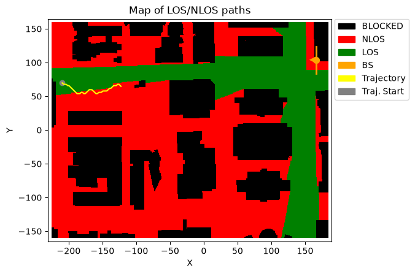
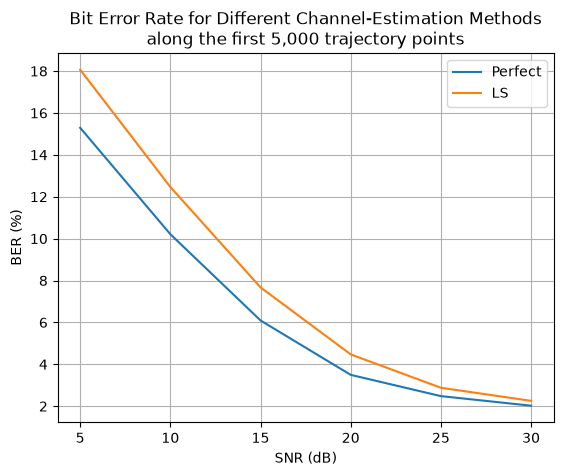

End-to-End PDSCH Simulation with a Trajectory-Based Channel Model
This notebook demonstrates how to use NeoRadium with a DeepMIMO ray-tracing scenario to simulate an end-to-end 5G NR PDSCH link while the UE moves along a trajectory. The example starts by opening a DeepMIMO scenario, selecting a base station and user grid, and creating a random trajectory through the DeepMIMO user grid. The trajectory-based channel model is then used in a slot-by-slot PDSCH simulation to measure the bit error rate (BER) at different SNR values.
The main goal is to compare two receiver-side channel estimation assumptions:
Perfect channel knowledge: the receiver uses the exact effective channel.
LS + interpolation: the receiver estimates the channel from the received grid using least-squares estimation and interpolation.
For simplicity, both cases use the same perfect-channel precoder at the transmitter. This keeps the example focused on the receiver-side channel estimation difference and avoids adding extra complications related to transmitter-side CSI acquisition or precoder estimation.
A few implementation notes:
The
dataFoldervariable should point to the folder where the DeepMIMO scenario files are stored on your system. Update it if your local DeepMIMO data is in a different location.The
trajLenparameter used when generating the random trajectory refers to the number of DeepMIMO grid points used for the path. This is different from the number of trajectory points used by the channel model, since the trajectory points are obtained by interpolation between DeepMIMO grid points.The simulation uses only the first 5,000 trajectory points. This keeps the runtime manageable while still allowing the UE to move through a meaningful portion of the generated trajectory.
The final result is a BER-vs-SNR comparison for the two channel estimation methods.
[1]:
import numpy as np
import scipy.io
import time
import matplotlib.pyplot as plt
from neoradium import DeepMimoData, TrjChannel, BandwidthPart, PDSCH, AntennaPanel, random
[2]:
# Replace this with the folder on your system where the DeepMIMO scenarios are stored
dataFolder = "/data/RayTracing/DeepMIMO/Scenarios/V4/"
DeepMimoData.setScenariosPath(dataFolder)
# Create a DeepMimoData object
deepMimoData = DeepMimoData("asu_campus_3p5")
deepMimoData.print()
DeepMimoData Properties:
Scenario: asu_campus_3p5
Version: 4.0.0a3
UE Grid: rx_grid
Grid Size: 411 x 321
Base Station: BS (at [166. 104. 22.])
Total Grid Points: 131,931
UE Spacing: [1. 1.]
UE bounds (xyMin, xyMax) [-225.55 -160.17], [184.45 159.83]
UE Height: 1.50
Carrier Frequency: 3.5 GHz
Num. paths (Min, Avg, Max): 0, 6.21, 10
Num. total blockage: 46,774
LOS percentage: 19.71%
[3]:
random.setSeed(123) # Make results reproducible
bwp = BandwidthPart(numRbs=24, spacing=15) # Create the BandwidthPart object
# Create a random trajectory
trajectory = deepMimoData.getRandomTrajectory(xyBounds=np.array([[-210, 40], [-120, 100]]), # Trajectory bounds
segLen=2, # Number of DeepMIMO grid points on the shortest segment
bwp=bwp, # The bandwidth part
trajLen=100, # Number of DeepMIMO grid points on the trajectory
speedMps=14, # Speed in m/s
trajDir="+X") # Trajectory direction
trajectory.print() # Print the trajectory information
ax = deepMimoData.drawMap("LOS-NLOS", trajectory) # Draw the map with the trajectory
deepMimoData.drawBsPanel(ax, 180) # TX antenna at a 180-degree bearing angle
Trajectory Properties:
start (x,y,z): (-209.55, 69.83, 1.50)
No. of points: 7,648
curIdx: 0 (0.00%)
curSpeed: [ 9.9 -9.9 0. ]
Total distance: 107.30 meters
Total time: 7.647 seconds
Average Speed: 14.031 m/s
Carrier Frequency: 3.5 GHz
Paths (Min, Avg, Max): 6, 8.99, 10
Totally blocked: 0
LOS percentage: 29.11%

[4]:
numSlots = 5000 # Number of OFDM slots; uses the first 5,000 trajectory points
snrDbs = [5,10,15,20,25,30] # SNR values, in dB
freqDomain = True # Set to False to apply the channel in the time domain
# Create a PDSCH object
pdsch = PDSCH(bwp, numLayers=2, modulation="16QAM") # PDSCH with 2 layers
pdsch.setDMRS(configType=2, additionalPos=2) # DMRS configuration
results = {} # Store simulation results
# Create a trajectory-based channel model
channel = TrjChannel(bwp, trajectory,
txAntenna = AntennaPanel([2,4]), # 8 TX antennas
txOrientation = [180,0,0], # BS antenna facing the left side of the map
rxAntenna = AntennaPanel([1,2]), # 2 RX antennas
seed = 123)
for chanEstMethod in ["Perfect", "LS"]: # Two channel estimation methods
results[chanEstMethod] = {}
print(f"\nRunning the end-to-end simulation with \"{chanEstMethod}\" channel estimation "
f"in the {'frequency' if freqDomain else 'time'} domain.")
print("SNR(dB) Total Bits Bit Errors BER(%) Point time(sec.)")
print("------- ------------ ---------- ------ ----- ----------")
for snrDb in snrDbs:
random.setSeed(123) # Make the results reproducible
t0 = time.monotonic()
channel.restart()
bitErrors = 0
totalBits = 0
for slotNo in range(numSlots):
pdsch.initGrid() # Create a resource grid populated with DMRS
numBits = pdsch.getBitCapacity()[0] # Actual number of bits available in the resource grid
txBits = random.bits(numBits) # Create random binary data
# Populate the resource grid with data, including QAM modulation and resource mapping.
pdsch.setPdschData(txBits)
channelMatrix = channel.getChannelMatrix() # Get the channel matrix
precoder = pdsch.getPrecodingMatrix(channelMatrix) # Get the precoder matrix from the PDSCH object
txGrid = bwp.createGrid(channel.txAntenna.numEl) # Create the transmitted resource grid
pdsch.precodeTo(txGrid, precoder) # Perform the precoding
if freqDomain:
rxGrid = txGrid.applyChannel(channelMatrix) # Apply the channel in the frequency domain
rxGrid = rxGrid.addNoise(snrDb=snrDb) # Add noise
else:
txWaveform = txGrid.ofdmModulate() # OFDM modulation
maxDelay = channel.getMaxDelay() # Get the maximum channel delay
txWaveform = txWaveform.pad(maxDelay) # Pad with zeros
rxWaveform = channel.applyToSignal(txWaveform) # Apply channel in time domain
noisyRxWaveform = rxWaveform.addNoise(snrDb=snrDb, bwp=bwp) # Add noise
offset = channel.getTimingOffset() # Get the timing offset for synchronization
syncedWaveform = noisyRxWaveform.sync(offset) # Synchronization
rxGrid = syncedWaveform.ofdmDemodulate(bwp) # OFDM demodulation
errVar = None
if chanEstMethod == "Perfect": # Perfect channel knowledge
estChannelMatrix = TrjChannel.getEffChannel(channelMatrix, precoder)
else: # LS + interpolation channel estimation
estChannelMatrix, errVar = pdsch.estimateChannel(rxGrid)
eqGrid, llrScales = pdsch.equalize(rxGrid, estChannelMatrix, errVar) # Equalization
rxBits = pdsch.getHardBits(eqGrid)[0] # Demodulation (hard decision)
bitErrors += np.abs(rxBits-txBits).sum() # Calculate the number of bit errors
totalBits += numBits
print(f"{snrDb:^7d} {totalBits:<12,d} {bitErrors:<10,d} {bitErrors*100/totalBits:^6.3f}"
f" {slotNo+1:^5,d} {time.monotonic()-t0:^10.2f}", end='\r')
channel.goNext() # Prepare the channel model for the next slot
dt = time.monotonic()-t0 # Total time for this SNR
results[chanEstMethod][snrDb] = {"totalBits":totalBits,
"bitErrors":bitErrors,
"BER": bitErrors*100/totalBits, # BER percentage
"Time": dt}
print()
# Plot the results
for i,chanEstMethod in enumerate(['Perfect', 'LS']):
bers = [results[chanEstMethod][snrDb]["BER"] for snrDb in snrDbs]
plt.plot(snrDbs, bers, label=chanEstMethod)
plt.legend()
plt.title(f"Bit Error Rate for Different Channel-Estimation Methods\n"
f"along the first {numSlots:,} trajectory points")
plt.grid()
plt.xlabel("SNR (dB)")
plt.xticks(snrDbs)
plt.ylabel("BER (%)")
plt.show()
Running the end-to-end simulation with "Perfect" channel estimation in the frequency domain.
SNR(dB) Total Bits Bit Errors BER(%) Point time(sec.)
------- ------------ ---------- ------ ----- ----------
5 149,760,000 22,902,539 15.293 5,000 234.99
10 149,760,000 15,291,978 10.211 5,000 234.88
15 149,760,000 9,124,849 6.093 5,000 235.19
20 149,760,000 5,234,897 3.496 5,000 235.25
25 149,760,000 3,714,488 2.480 5,000 237.60
30 149,760,000 3,029,572 2.023 5,000 234.70
Running the end-to-end simulation with "LS" channel estimation in the frequency domain.
SNR(dB) Total Bits Bit Errors BER(%) Point time(sec.)
------- ------------ ---------- ------ ----- ----------
5 149,760,000 27,055,580 18.066 5,000 242.67
10 149,760,000 18,667,701 12.465 5,000 240.65
15 149,760,000 11,489,101 7.672 5,000 238.97
20 149,760,000 6,697,518 4.472 5,000 237.22
25 149,760,000 4,311,994 2.879 5,000 235.84
30 149,760,000 3,376,237 2.254 5,000 234.05

[ ]: